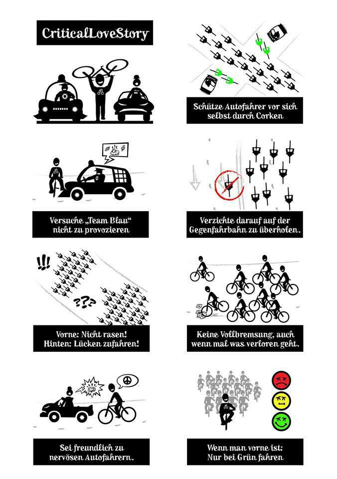
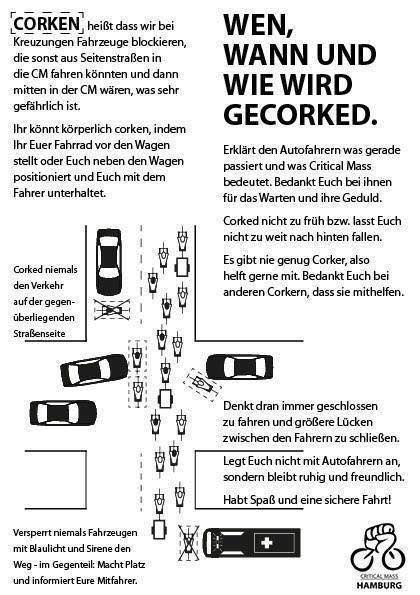

Hast du drei Minuten Zeit? Dann erklären wir dir alles, was du für die Critical Mass wissen musst.
Vereinfacht gesagt: Eine Fahrradtour.
Weltweit steigen am letzten Freitag im Monat in vielen Städten Menschen aufs Fahrrad und treffen sich zu einer gemeinsamen Radtour. Manche sehen darin einfach eine Stadtrundfahrt mit Freunden, andere wollen auf die Belange des Radverkehrs aufmerksam machen, wieder andere möchten einfach mal wieder Gleichgesinnte treffen, während für einen Moment Ruhe einkehrt auf den vielbefahrenen Hauptverkehrsstraßen.
Je nach Stadt und Jahreszeit dauern diese Touren zwischen einer und zweieinhalb Stunden, während der zehn bis 30 Kilometer zurückgelegt werden. Keine Angst, die Durchschnittsgeschwindigkeit beträgt meistens nicht mehr als 16 Kilometer pro Stunde — das Tempo wird nicht dein Problem sein, manchmal wird es dir eher zu langsam vorangehen.
Auch das unterscheidet sich von Stadt zu Stadt: Meistens trifft man sich an einem zentralen Treffpunkt, quatscht noch eine Weile und fährt dann eine Runde durch die Stadt. Häufig wird wenigstens im Sommer im Anschluss noch zu unterschiedlichen Fahrrad-Aktivitäten eingeladen.
Eigentlich ist die oberste Prämisse: Verhalte dich vernünftig und mach keinen Unsinn, der andere Menschen gefährden könnte. Dazu zählt insbesondere:

Die Critical Mass verhält sich als Fahrradverband wie ein einzelnes Fahrzeug: Fahren vorne an der Spitze die ersten Radfahrer über eine grüne Ampel, fahren alle anderen hinterher, auch wenn die Ampel zwischendurch auf rotes Licht umschaltet. Stößt die Spitze auf eine rote Ampel, wird auf die nächste Grünphase gewartet.
Drei Minuten reichen für die Grundlagen, aber es gibt noch ein paar weitere Dinge zu beachten.
Erfahrungsgemäß lassen sich Lücken im Teilnehmerfeld ab einer bestimmten Teilnehmerzahl kaum noch vermeiden — umso wichtiger ist es, Lückenbildung aktiv zu vermeiden und entstandene Lücken im Teilnehmerfeld sofort zu schließen, um Missverständnisse und Gefährungen gegenüber anderen Verkehrsteilnehmern auszuschließen. Lücken entstehen vor allem bei Steigungen oder engen Streckenabschnitten, wenn einzelne Teilnehmer unterschiedliche Geschwindigkeiten fahren.
Wenn du vorne fährst, achte bitte auf eine moderate Geschwindigkeit, um das Teilnehmerfeld nicht unnötig in die Länge zu ziehen, was wiederum Lückenbildung begünstigt. Je nach Teilnehmerzahl kann es nach engen oder generell problematischen Streckenabschnitten günstig sein, an der nächsten Kreuzung erst einmal einen Moment abzuwarten, bis sich das Teilnehmerfeld wieder einigermaßen gesammelt hat.
Schon bei kleineren Massen ist es wichtig, Kreuzungen gegen den Querverkehr abzusichern — im Critical-Mass-Jargon nennt man das Corken. Beim Corken wird der Querverkehr an einer Kreuzung angehalten, so dass das Teilnehmerfeld ungehindert passieren kann:

Denke bitte an einige wichtige Punkte:
In Deutschland berufen sich die Teilnehmer der Critical Mass auf § 27 Abs. 1 StVO, der es einer Gruppe von mindestens 16 Radfahrern erlaubt, als Fahrradverband auf der Fahrrad zu fahren.
Der Verbandeigenschaft ist außerdem die Möglichkeit zu verdanken, geschlossen als Fahrradverband eine Kreuzung zu überqueren, selbst wenn die Lichtzeichen zwischendurch rotes Licht zeigen. Das Landgericht Verden bekräftigte im Februar 1989, dass diese Besonderheit auch für Fahrradverbände gelte (Az. Ns Ds 2 Js 10396/88) — ob man damals schon Fahrradverbände von über sechstausend Teilnehmern im Blick hatte, sei mal dahingestellt.